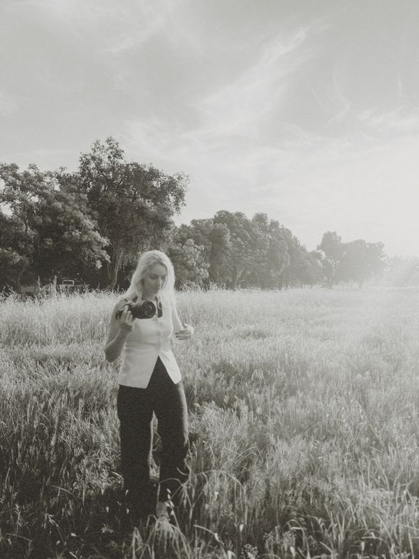
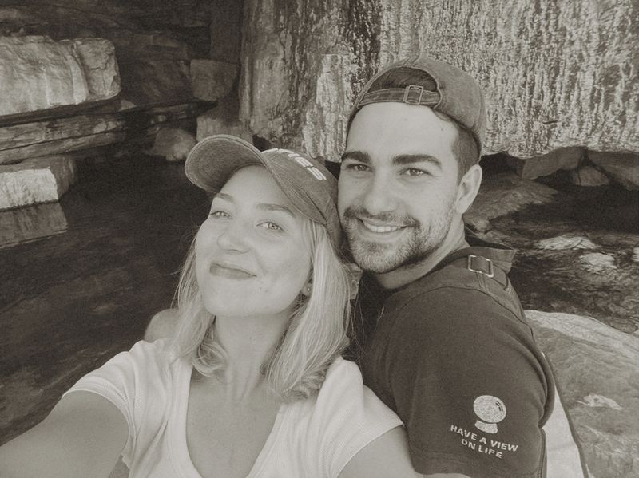
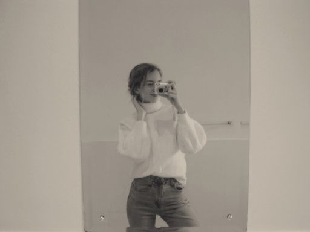
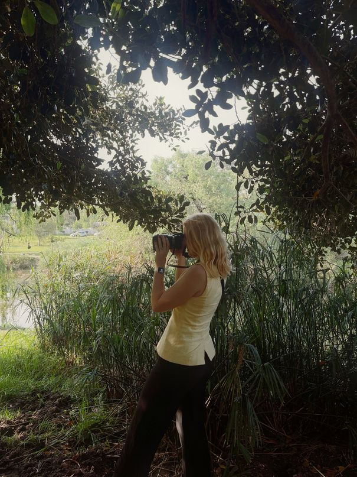

▶ 20 ▶Get to know my why
I believe that I was created by the Creator to create. I seek to be a disciple of Jesus in everything I do.
I picked up a camera at the age of 14 and haven’t really stopped since. My love for photography has grown out of a love for making things beautiful. I strive for every photo to feel alive - like a still from your own film.
My work is inspired by the nostalgia of old films with lots of warmth, raw emotion and dreamy light. I prefer this to a rigid, ultra-polished approach and rather seek to document the moment as it’s felt.
Photos are such a unique gift because they act as a kind of timeless moment that you can return to - and I think that every season of life is worth capturing.
About me
I’m Joy
I was born and raised in Cape Town, South Africa.
One of my biggest blessings was getting married young to my high-school sweetheart.
Hobbies
I am what you might call a true romantic: I paint, sculpt, write, studied ancient history and languages etc.
My favorite piece of literature is Tolkien’s Silmarillion.
Cooking is my love-language. And a matcha latte is how I feel loved;)
Photography
From picking up a DSLR at the age of 14, to finally getting a camera of my own, to running a photography business - there hasn’t been a moment where I’ve not loved the artistry and craft of photography.
Also
Alongside my photography, my husband and I serve at a local church where we lead the next generation ministries.
I will not force Jesus onto anyone - but if you want to hear the Good News, ask me about it!